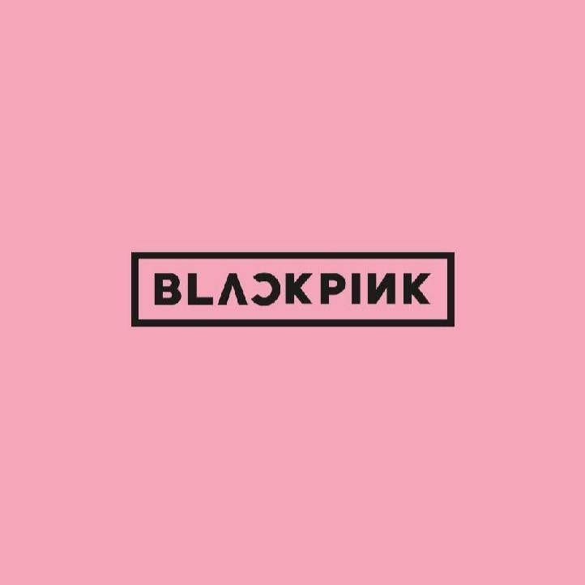
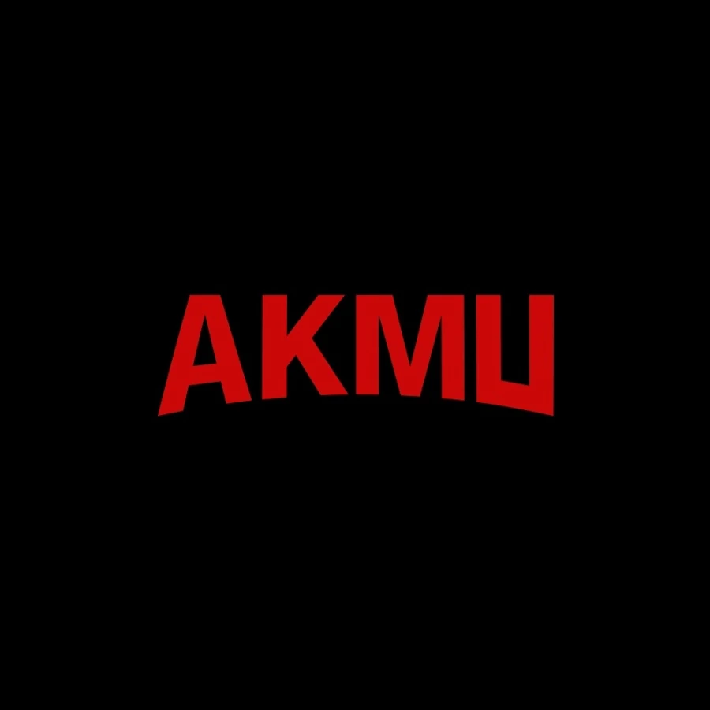
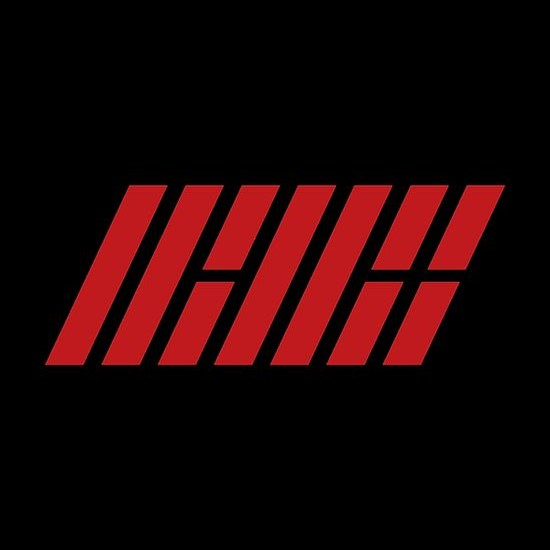
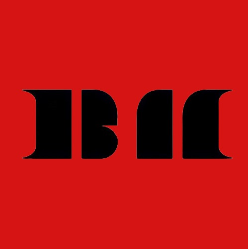

Big Bang (Hangul: 빅뱅) adalah boy band asal Korea Selatan yang dibentuk oleh YG Entertainment. Grup ini debut secara resmi pada 19 Agustus 2006 dengan lima anggota, yakni G-Dragon, T.O.P, Taeyang, Daesung dan Seungri. Didominasi dengan aliran hip hop, debut mereka pun cukup sukses dengan album pertama Bigbang Vol.1 yang terjual sebanyak 48.000 kopi. Kesuksesan mereka melesat setelah dirilisnya album mini pertama mereka, Always, dengan singel "Lies" (Hangul: 거짓말; RR: Geojitmal). Lagu ini merajai tangga lagu Korea selama tujuh minggu berturut-turut[5] dan membawa grup ini meraih penghargaan 'Song of the Year' di Mnet Korean Music Festival 2007.
2NE1
2NE1 (bahasa Korea: 투애니원, IPA: [tʰu.ɛ.ni.wʌn]) adalah grup penyanyi wanita asal Korea Selatan yang dibentuk oleh YG Entertainment pada tahun 2009. Saat ini, grup terdiri dari CL, Bom dan Dara. Anggota keempat dan termuda, Minzy, resmi keluar dari grup pada 5 April 2016.[2]
2NE1 pertama kali muncul dalam lagu "Lollipop", sebuah kampanye komersial untuk LG Electronics bersama Big Bang. Singel debut mereka, "Fire" dirilis pada 6 Mei 2009. Sejak saat itu, grup ini telah merilis dua album mini eponim: 2NE1 (2009) dan 2NE1 (2011), serta dua album studio: To Anyone dan Crush. Album mini pertama mereka menelurkan singel hit "I Don't Care" yang mengantarkan grup ini meraih penghargaan 'Song of the Year' di Mnet Asian Music Awards 2008. Singel berikutnya seperti "Go Away", "Lonely" dan "I Am the Best" juga meraih kesuksesan serupa, di mana "I Am the Best" kembali mengantarkan 2NE1 memenangkan kategori 'Song of the Year' untuk kedua kalinya pada ajang yang sama pada tahun 2011.
YGE Artist Gen 3

BLACKPINK

AKMU

IKON
Blackpink
Blackpink (bahasa Korea: 블랙핑크, digayakan dalam huruf kapital semua atau sebagai BLɅƆKPIИK) adalah grup vokal wanita asal Korea Selatan. Blackpink dibentuk oleh YG Entertainment dengan beranggotakan empat orang, diantaranya Jennie, Jisoo, Lisa, dan Rosé.
Blackpink merupakan grup vokal wanita Korea yang memiliki lagu dengan posisi tertinggi di Billboard Hot 100, berada di nomor 55 dengan "Ddu-Du Ddu-Du",[2] dan di Billboard 200, berada di nomor 40 dengan EP berjudul Square Up.[3] Blackpink merupakan grup pop Korea perempuan pertama dan satu-satunya yang memasuki dan memuncaki Emerging Artists Billboard.'[2] Mereka juga merupakan grup pop Korea Selatan wanita pertama yang mempunyai empat lagu di Billboard World Digital Song Sales.
AKMU
Akdong Musician (bahasa Korea: 악동뮤지션, atau dikenal juga sebagai AKMU) adalah duo musik asal Korea Selatan dibawah label rekaman YG Entertainment, yang terdiri dari kakak beradik Lee Chanhyuk dan Lee Suhyun. Mereka memenangkan kompetisi pencarian bakat musim kedua dari serial K-pop Star.
Lagu-lagu yang terdapat dalam album debut tahun 2014, Play, telah diunduh dengan jumlah sebanyak 6.1 juta unduhan,[4] serta dianugerahi sebagai Album Pop Terbaik di Korean Music Awards 2014. Album mereka selanjutnya Spring (2016) dan Winter (2017) semakin memantapkan kesuksesan mereka. Sejak Maret 2017, duo ini telah menjual 20 juta lagu digital di Korea Selatan.
iKON
iKON (Hangul: 아이콘) iKON atau ||¦||¦¦ (dalam bentuk logo), adalah grup idola pria asal korea selatan yang dibentuk pada tahun 2015 oleh YG Entertainment dan beranggotakan enam orang. Grup ini pertama kali diperkenalkan dalam acara realitas WIN: Who is Next sebagai "Tim B". Setelah itu, Tim B muncul kembali dalam acara realitas survival berjudul Mix & Match, yang menentukan tujuh anggota formasi akhir dari iKON: B.I, Bobby, Jay, Ju-ne, Song, DK dan Chan.
Grup ini merilis album studio debut mereka berjudul Welcome Back (2015), yang menduduki posisi teratas di Gaon Album Chart Korea Selatan dan menghasilkan singel-singel nomor satu seperti "My Type", "Apology" dan "Dumb & Dumber" dan tiga singel yang menduduki posisi 10 teratas: "Rhythm Ta", "Airplane" dan "Anthem". Album ini termasuk sukses secara komersial, terjual sebanyak 260.000 kopi di Asia, sementara lagunya terjual sebanyak 4,8 juta kopi, yang mengantarkan mereka untuk memenangkan sejumlah penghargaan artis pendatang baru terbaik pada acara penghargaan utama Asia, termasuk Mnet Asian Music Awards, Japan Record Awards dan QQ Music Awards. Dua tahun berikutnya, mereka merilis singel "#WYD" dan "New Kids: Begin", dan berfokus pada tur Asia dan beberapa tur konser di Jepang. Album studio kedua mereka, yang bertajuk Return, dirilis pada tanggal 25 Januari 2018.
YGE Artist Gen 4
TREASURE

BABY MONSTER
Treasure
Treasure (Hangul: 트레저, romanisasi: Teurejeo; Kana: トレジャー, romanisasi: Torejā; ditulis sebagai TREASURE) adalah grup vokal pria Korea Selatan yang dibentuk oleh YG Entertainment melalui program "YG Treasure Box" yang terdiri dari 10 anggota, yaitu Choi Hyun-suk, Park Jihoon, Yoshi, Junkyu, Yoon Jae-hyuk, Asahi, Doyoung, Haruto, Park Jeongwoo, dan So Junghwan. Choi Hyun-suk dan Park Jihoon sebagai anggota tertua secara bersama-sama berbagi peran sebagai leader grup
Baby Monster
BABYMONSTER (Hangeul: 베이비몬스터; romanisasi: beibimonseuteo) atau dikenal juga sebagai BAEMON (hangeul: 베몬) adalah grup vokal wanita asal Korea Selatan dibentuk oleh YG Entertainment dengan anggota berjumlah 6 orang yaitu, Ruka, Pharita, Asa, Rami, Rora, dan Chiquita. Mereka melakukan debut pada 27 November 2023, dengan lagu debut digital "Batter Up"